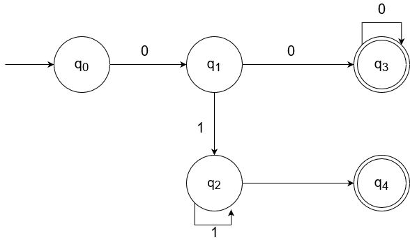

Необходимо выполнить задание и написать программу для поиска в тексте подстрок, соответствующих заданному регулярному выражению.
Для двух задач можно использовать библиотечные реализации. Для одной задачи необходимо самостоятельно реализовать алгоритм поиска подстрок в тексте.
Встроить разработанные алгоритмы в интерфейс текстового редактора, разработанного на первой лабораторной работе.
Исходные данные – текст, содержащий данные заданного формата. Выходные данные – найденные выражения с указанием позиции начала. Возможно выделение подстрок в исходном тексте.
Построить РВ, описывающее номера телефонов (мобильный, городской с кодом города).
Задача 21:
На основании свойств регулярных выражений доказать тождества для произвольных
R1, R2, R3, R4:
R4R1R3ε*|
R4R1*R3|
R4R3 =
R4R1*R3
Описать язык, порождаемый следующим регулярным выражением: 0(0|1)*0
Для определения номеров телефона из России с кодами как для мобильных телефонов,
так и для стационарных нужно использовать следующее регулярное выражение:
/^((8|\+7)[\- ]?)?\(?\d{3,5}\)?[\- ]?\d{1}[\- ]?\d{1}[\- ]?\d{1}[\- ]?\d{1}[\- ]?\d{1}(([\- ]?\d{1})?[\- ]?\d{1})?$/
Данное регулярное выражение способно различить номера телефонов с разделителями кода в виде скобок или без них,
а также номера телефонов и с дефисами, и без них.
Для начала покажем, что R4R3 образует язык, являющийся подмножеством языка R4R1*R3.
По определению R1* = ε|R1|R12|...|R1n|...
Из этого очевидно, что R4R3 = R4εR3, что является частным случаем для R4R1*R3.
Далее покажем, что R4R1R3ε* образует язык, являющийся подмножеством языка R4R1*R3.
По определению ε* = ε|ε2|...|εn|... = ε.
Также выше было показано, что R1* = ε|R1|R12|...|R1n|...
Из этого можно сделать следующий вывод: R4R1R3ε* = R4R1R3ε = R4R1R3,
а это является частным случаем для R4R1*R3.
В итоге можно сделать вывод, что R4R1R3ε*|
R4R1*R3|
R4R3 =
R4R1*R3, что и требовалось доказать.
Регулярное выражение для заданной строки будет выглядеть следующим образом:
/0?01{0,}0/
Анализ строк для данного выражения был выполнен с помощью конечного автомата, граф которого представлен ниже: 